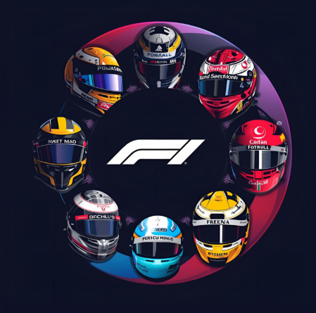

La Fórmula 1 nació en 1950 como el Campeonato Mundial de Pilotos organizado por la FIA (la Federación Internacional del Automóvil). Su primera carrera se corrió en Silverstone - Reino Unido. En sus primeras décadas, fue un deporte elitista y peligroso, con pocos estándares de seguridad y una tecnología todavía rudimentaria.
Durante los años 50, dominaban escuderías europeas como Alfa Romeo, Ferrari y Maserati, con el argentino Juan Manuel Fangio como figura principal, logrando cinco títulos. En los 60, el enfoque se trasladó al diseño y la ingeniería, con el motor trasero revolucionando el deporte.
Los años 70 fueron una etapa de glamour, rivalidades y creciente popularidad. Niki Lauda y James Hunt protagonizaron una de las batallas más recordadas. El deporte comenzó a atraer patrocinadores y televisión, profesionalizando aún más.
En los años 80, la tecnología y los motores turbo dominaron. Nació la legendaria rivalidad entre Ayrton Senna y Alain Prost, especialmente durante su paso por McLaren-Honda. Las velocidades extremas aumentaron, pero también la cantidad de accidentes graves.
La muerte de Senna en 1994, junto a la de Ratzenberger, marcó un punto de inflexión en la seguridad del deporte. Surgió entonces un nuevo dominador: Michael Schumacher, quien con Ferrari logró un dominio histórico entre 2000 y 2004.
Los años 2000 consolidaron la F1 como un espectáculo global. Se expandió a Asia y Medio Oriente. En 2005 y 2006, Fernando Alonso rompió el dominio de Schumacher. Luego, Lewis Hamilton empezó su camino hacia convertirse en uno de los grandes.
En 2021, comenzó una nueva era con la coronación de Max Verstappen tras una de las temporadas más emocionantes. Con el cambio reglamentario de 2022, Red Bull se convirtió en la fuerza dominante. Verstappen ganó los títulos de 2022, 2023 y 2024, marcando el inicio de una nueva dinastía.
La F1 actual en 2025 es altamente tecnológica, global, cada vez más sostenible y más competitiva que nunca.